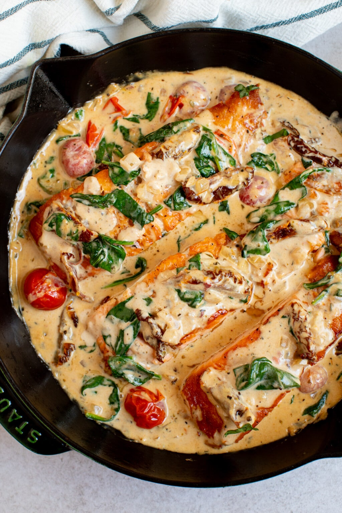

Tuscan Salmon

DESCRIPTION
Rich and creamy Tuscan Salmon is one of my go-to easy dinner recipes. Pan-seared salmon is cooked in a delicious cream sauce to pair perfectly with veggies, rice, or mashed potatoes. It’s creamy, cheesy, and mouthwatering! It’s a classic dinner recipe that you’ll make again and AGAIN!
INGREDIENTS
- Salmon: You can use fresh salmon or frozen salmon but I find that fresh sears easier as it has less moisture. Either way, make sure the salmon is thawed and rests at room temperature before searing. You can use anywhere between 3/4 pound to 1 pound of salmon, cut into 3 filets.
- Olive Oil:You will need extra-virgin olive oil to pan sear the salmon fillets.
- Sun-dried Tomatoes in Oil: Make sure to choose sun-dried tomatoes in oil as they have the best texture and flavor for dishes like this creamy tuscan salmon recipe. You can substitute with roasted red peppers in oil, if desired.
- Cherry Tomatoes: They add even more texture and color.
- Fresh Baby Spinach: Adds a pop of green color. Plus, adding greens to deliciously savory dishes like this is a great way to pack in your greens. You can substitute the spinach for kale.
- Onion I use a white onion, but you can substitute for a yellow onion.
- Seasonings We keep it simple by using paprika, Italian seasoning, salt and freshly ground black pepper!
- GarlicI like to use fresh garlic and mince it myself, but you can use store-bought minced garlic too!
- Heavy CreamThis serves as the base of the creamy tuscan sauce. Heavy cream is the key to very flavorful cream sauce.
- Parmesan CheeseGives the sauce a umami, cheesy, kick.
STEPS
- Prep and Sear the Salmon: Pat both sides of the salmon dry with paper towels. Season both side of the salmon with salt and pepper. Heat the oil in a large skillet over medium-high heat. When the oil is hot, sear on each side for 3 to 4 minutes, until golden brown. (It will not be cooked through at this point as the salmon cooks more in the creamy sun-dried tomato sauce.) Remove and set aside.
- Make the Sauce: Add the onions, sundried tomatoes, cherry tomatoes and garlic to the same pan and saute on medium heat for 5 minutes, until softened and fragrant. Stir in the heavy cream, Parmesan cheese, salt, paprika and Italian seasoning. Reduce the heat to low, then stir in the baby spinach and simmer until the spinach is wilted.
- Let everything simmer togetherAdd the salmon back to the pan with the sauce and simmer for 5 to 10 minutes, until the salmon is cooked through. Serve and enjoy!
HOME